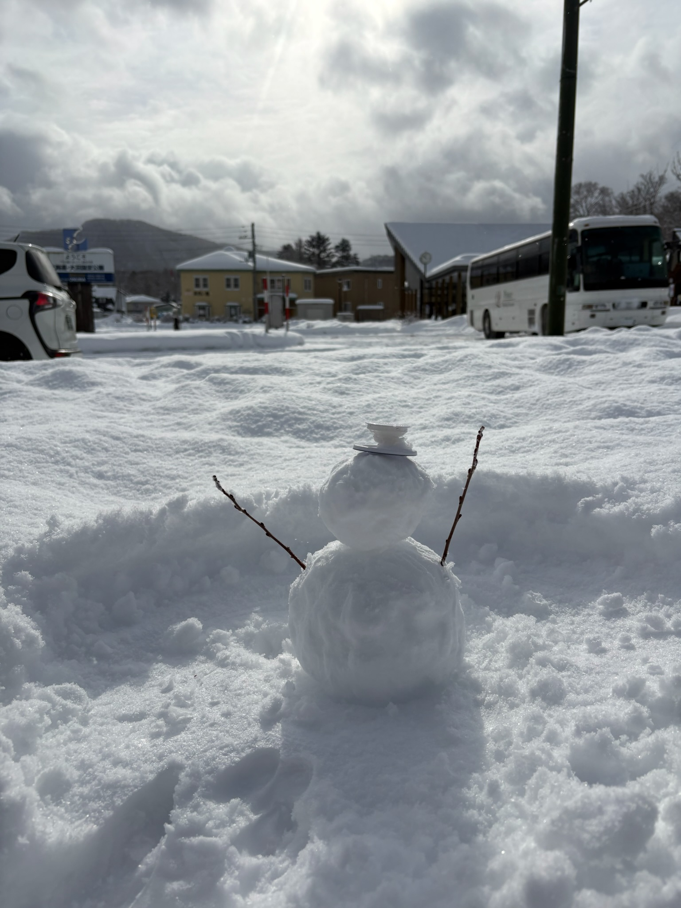
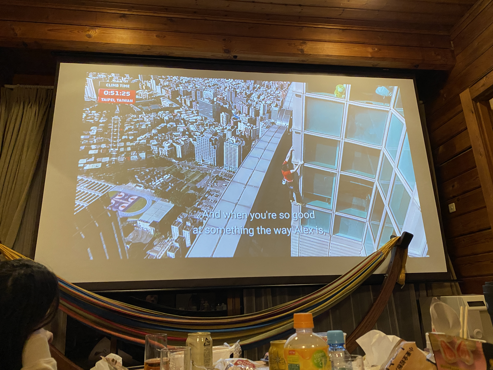
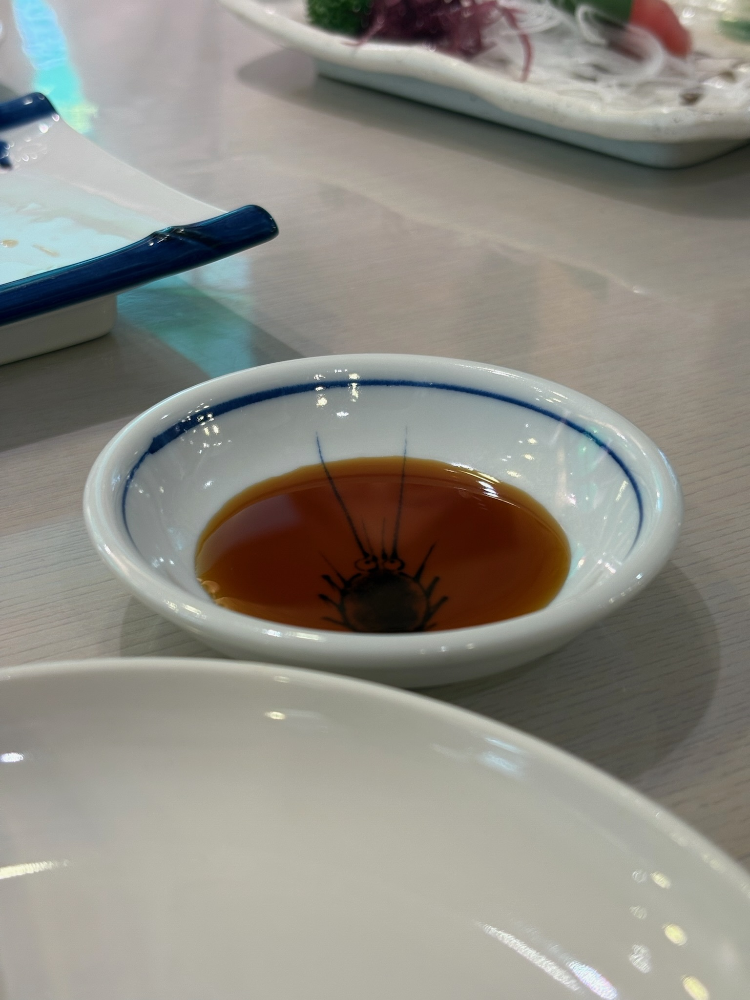

✦ 近況報告 2026 ✦
嗨，歡迎來到
我的林中小屋 🌱
這裡放了些上半年的動態，只給知道暗號的你看 ☕
✿ 一月的日本，暖冬小旅行 ✿
隨手記錄的片刻 · 2026 January · Japan
滑雪滑雪

堆雪人超好玩欸

如果不是和大家一起看,我還真不會看這種紀錄片

這個小強碟子在中山區某日式蕎麥麵也有
← 左右滑動，看更多照片 →
動漫紀錄
去年到現在看了一堆動漫


要去的演唱會
有第一場，就會有無限場
- 7月 DxS 高雄 🌟
- 8月 Official 髭男 dism 台北 ✨
- 9月 れん 台北 🎵
- 10月 vaundy 😢 沒搶到票
- 11月 BTS 高雄 💜
創作紀錄
用 Claude 做了兩個 PWA
媽媽的菜單 🥢
旅遊日誌 🗺️
開發完了，但還沒有新的旅遊資料 XD
願望紙條
一些碎碎念與願望
🌿 點擊瓶中的卷軸，看看裡面藏著什麼心願…